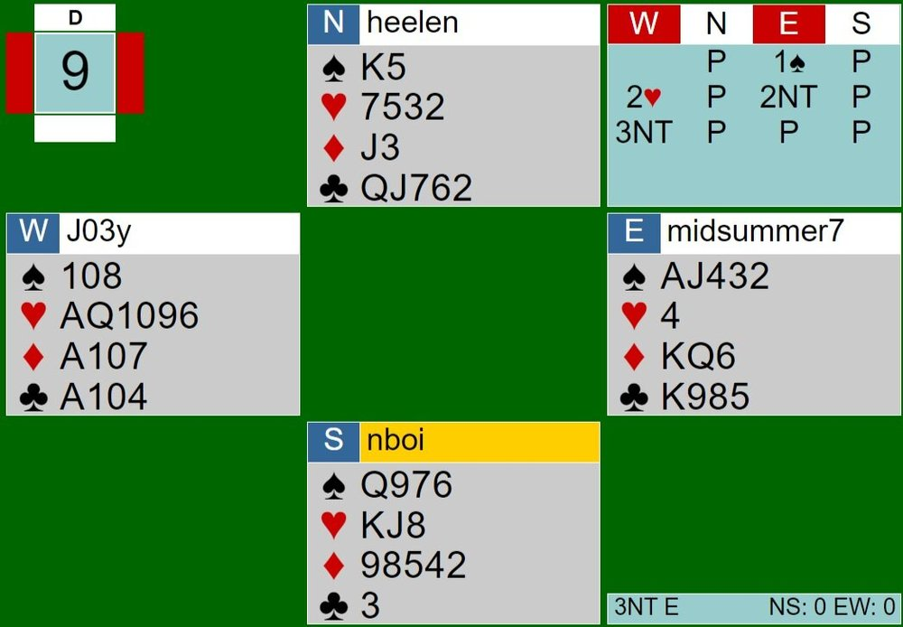
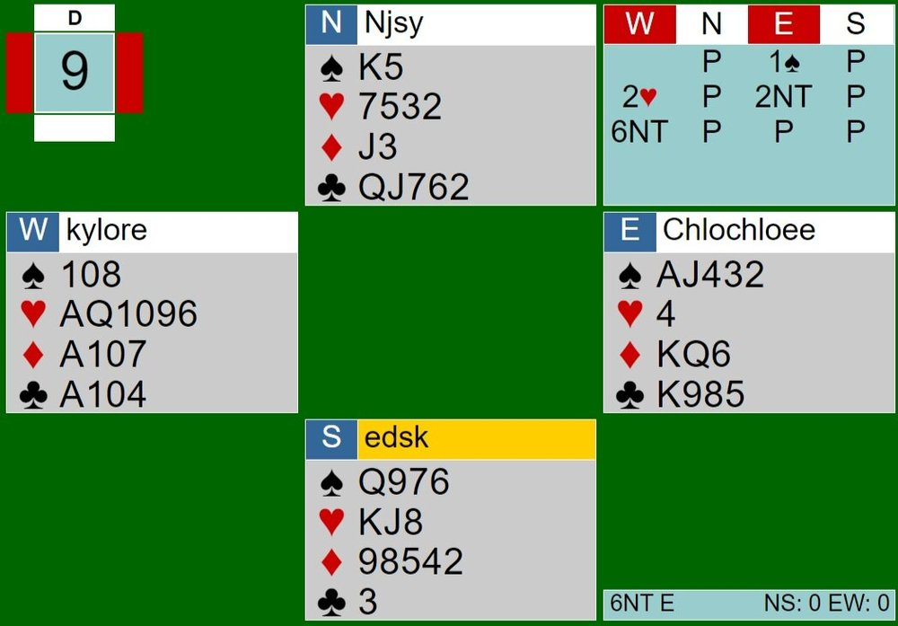

Written by Helen Chow
From our perspectives as players in Saturday’s team game, the hands dealt were extraordinary. Today, we will talk about a very special board, Board 9, where the scores differed drastically with one table making 6NT while the other table went down two in 3NT. Hang on, this analysis is a long one!
In both tables, North and South passed throughout the bidding due to the lack of good points and shape. Both tables’ East opened with one spade. West then bid two hearts (2/1 game forcing) and East bid 2NT. At my table, 2NT was followed by the correct bid of 3NT. The auction ended there. However, the other table’s West went straight to 6NT after 2NT, which I think is a huge overbid. To bid to slam, especially in no trump, you have to know that you and partner combined have at least thirty three points. West cannot assume that East has more than minimum. West should have just bid game here and let East decide if they want to try for slam after.


This time, North South lucked out and EW at the other table actually made 6NT. How, you may ask? Well, in short, NS did not cover the honors with their honors, causing themselves to be constantly finessed by EW. EW in this deal had two spade losers (either the queen or king of spades and the nine of spades) and at least one club (the Queen or Jack of clubs in North’s hand will inevitably be set up when EW tries to set up clubs). However, Declarer can make some sneaky finesses with the ATx on the board to try to limit their club losers, which is what Declarer did. East plays low to the Ace and plays the ten of clubs next. It would be right for North to cover the ten with her Queen or Jack, but she doesn’t, so the finesse works out and East sees that she can keep finessing North’s clubs. The last low club was played on the board and North missed her last chance of playing her Q or J to force out East’s King. East successfully will only lose one club (the last club in the game is North’s Queen and she can take it whenever she gets into her hand). On top of losing at least 3 tricks, EW also has one heart loser, but fortunately for EW, dummy covers whatever South plays. In sum, EW at this table should lose 2 spades, at least 1 club, and at least a heart for a total of 4+ losers.
North currently holds a club winner (the Queen of clubs) and EW has not lost a heart or a spade left. After successfully finessing the clubs, East played low to the Tx on the board. I guess South was desperate to take a trick because he went up with the QS in second hand. North, holding Kx in spades, plays low. Why would one play low here when one sees that they can set the contract by taking the next two tricks? North should have overtaken South’s QS with her King, and then played her winning club. 6NT definitely should not have made, but because the defense did not cover EW’s honors with their honors, that allowed EW to set up her spades (King falls to the Ace), and East managed to only lose to the Queen of spades. 6NT was their final result.
At my table, the contract was 3NT. 3NT is a risky contract because there is a lot of setting up to do. Declarer finessed twice the spades and lost both times. When East played a low spade to the Tx on the board, South did great by playing low, so the King of spades won the first spade trick. When East tries to finesse the other way from dummy to East’s hand, it loses to the Queen in South. Then, EW lost one club because North forced the King of clubs out the first trick, setting up the Queen in her hand. An important play comes up a few tricks later when North takes her Queen of clubs.
At this point in the board, North mirrored the dummy's hand with only having hearts and one club. Me, in North, wondered why no hearts had been played and I came to the conclusion that East definitely does not have the King or the Jack because wouldn’t East have tried to finesse or set dummy’s 5-card heart suit up? Leading the Ace of clubs forced dummy to lead from the AQTx of hearts, so whatever heart is led, South’s KJ would take the trick. EW could only lose one more trick. The Ace of hearts was led from dummy’s hand, setting up South’s King. The Queen was then led, setting up South’s Jack. The last three tricks (two hearts, one diamond) were taken by South.This could have been prevented. Instead of leading the Ace of hearts from AQTx, leading the 9 of hearts would get South to win with his Jack, play his winning diamond (down 1), but then allow West to cover whatever heart South leads back. After taking the diamond, if South led a low heart, the Queen of hearts would win and South’s King would fall to the Ace of hearts on the last trick. If the King of hearts was led after the diamond, dummy would take it with the Ace and the Queen of hearts would take the last trick. This small misplay of leading the Ace from AQTx costed EW one more trick. After losing 1 diamond, 2 spades, 1 club, and 2 hearts, 3NT-2 was the final result.
When comparing the results, it was a +1640 score/17IMPs for Chloe, Nathan, Aldwyn, and Helen’s team.This was a major board that made the gap between teams even greater and it was all because of a few finesses.